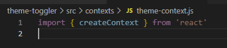

NOTA: O Context-API já está dentro da biblioteca do React, então não é necessário instala-lo separadamente, contudo, é necessário alguns passos pra poder usa-lo:
Na pasta src do projeto deve existir uma pasta chamada context ou contexts. Por sua vez, dentro dessa pasta, deve existir um arquivo chamado theme-context.js, onde será criado o contexto do tema:
criando o contexto:
Importando o createContext: 
Criando o Contexto de Temas:
Criando o Objeto de Temas que terá os temas dentro:
Quando o Contexto é criado, ele já pode ter um valor ou pode ter o valor de um objeto vazio, inicialmente:
Criando o Provedor de Temas:
Add Props + retornando um elemento:
Informando pro value={} os dados que quer propagar. Por enquanto, fica assim:
Finalizando o theme-provider:
Importando e escrevendo o provedor no App.js:
OBS: No App.js, tudo que estiver dentro do componente <ThemeProvider> é onde ficará todos os componentes que utilizarão o contexto.